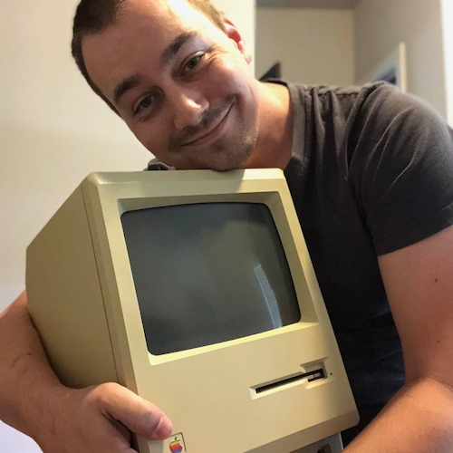

Robert Dale Smith
Software Engineer

Hi, I'm Robert. A road cycling, music collecting, full stack web developer located in Austin, TX. I really love computers and bringing ideas to life through the design and development of unique software.
I started repairing computers and building websites for people as a kid in the late 90s. Helping people solve technicial challenges has been at the core of everything I do.
Contact Resume/CV